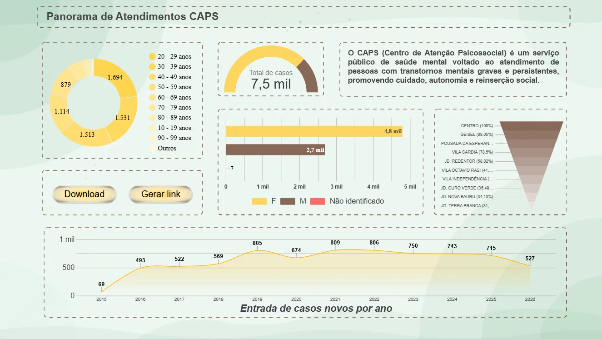

Cliente realSaúde mental públicaCAPS Girassol · Bauru/SP
Automação de processos + dashboard de atendimentos
O CAPS (Centro de Atenção Psicossocial) atende pessoas com transtornos mentais graves. A equipe gastava tempo preenchendo os mesmos dados em vários lugares. Escrevi 5 programas em Python com interface desktop que automatizam essas rotinas, e um painel em Looker Studio com o histórico do serviço.
Formulário→Python→Pasta + ficha / PTS→Planilha do serviço
- 5 programas em uso, rodando no computador do serviço, sem precisar instalar ferramentas extras
- Abertura de ficha de caso novo: um formulário gera pasta, documento e registro na planilha
- Dashboard com 7,5 mil atendimentos de 2015 a 2026, por faixa etária, sexo e bairro
PythonInterface desktopGoogle SheetsLooker StudioAutomação de documentos
